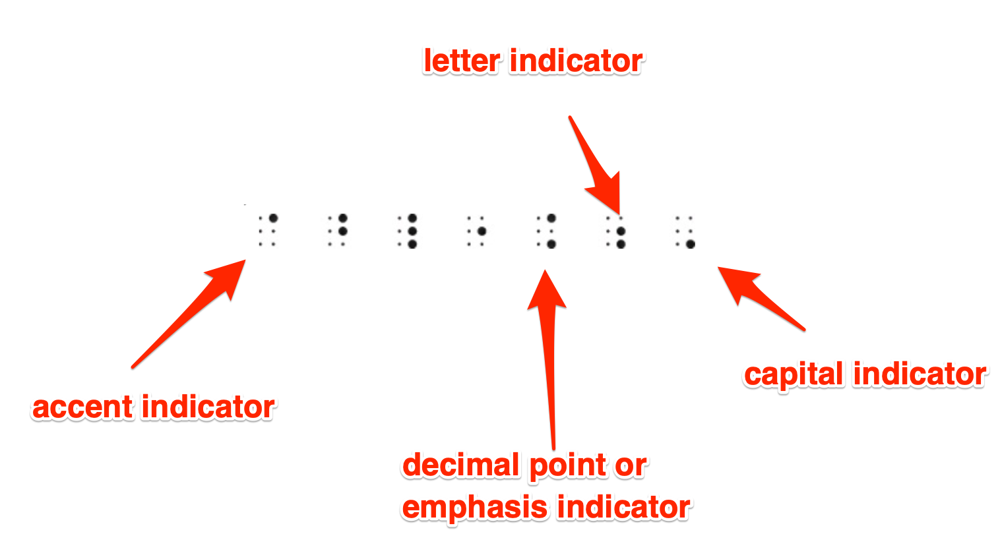

The Code
Table of Contents
- if you want go back? home
1 Preface
1.1 저자
찰스 페졸드(Charles Petzold)

1.2 저자의 말
10년 정도 고민해서 만든 책. 사람들에게 이책은 컴퓨터의 작동원리를 설명하는 책이라고 함. 사람들은
1.3 영어 단어
2 chapter1. Best Friends
10살짜리 애들이 나온다. 그들은 밤이 되면 서로 얘기하고 싶지만, 통행금지 시간에 걸려 대화를 할 수 없다. 서로간의 대화…그것은 인간의 본능이다.라고 petzold는 말한다. 그럼 어떻게 10살짜리들은 대화를 하려고 할까? 불이꺼진 밤에…첫번째 시도는 전화를 하는 것이다. 그러나 전화는 다른 가족이 쉽게 눈치챈다. 소리가 나기 때문이다. 그러면 컴퓨터로 대화하는 건 어떨까? 나우누리같은거…그런데 컴퓨터는 10살짜리 꼬마방에 있을 수가 없다.
Flashlight다. 후레쉬는 원래 밤에 공부할 학생을 위해 만들어진 것이기 때문에 10살 학생들이라면 누구나 갖고 있다. 10살짜리 학생들은 서로 대화하기 위해서 flashlight 를 사용하기로 한다.
창문에 서서 flashlight로 공중에 글자를 그린다. 그리고 조금 쉬었다가 또 그린다. 그런데 그렇게 그린 문자는 정확하지 않다. 그리고 팔이 너무 아프다. 다른 방법을 찾는다. 영화에서 보면, 먼곳에 떨어진 사람끼리 flash를 깜빡이면서 서로간의 대화를 하는 것을 본적이 있을 것이다. 그 방법을 이용하기로 한다. A는 1번깜빡임, B는 2번,..Z는 26번..이렇게 하면 BAD라는 문자는 2,1,4번으로 표시할 수 있다. 이렇게 하면 더이상 공중에 팔을 휘둘려 문자를 나타낼 필요는 없다. 그런데 "How are you?"라는 문장을 나타낸다고 생각해보자. 131번이나 깜빡여야 한다.?는 또 어떻게 나타낼 것인가?
이런 고민을 했던 또다른 사람이 있다. 모르스다. 그리고 그가 발명한 Morse Code다. Morse code는 깜빡임을 2개로 나눴다. 긴 깜박임, 짧은 깜빡임. 이렇게 하면,훨씬 복잡해진다. 그렇지만, ?표도 표시할 수 있고, "how are you?"란 문장을 단 32번만 깜빡이면 된다. 131번 깜빡이는것 보다 훨씬 낫다.
Morse code에선 짧은 깜빡임, 긴 깜박임을 dot, dash라고 부른다. 그리고 table이 있다. 문자와 대응되는 table.
Figure 2: morse code table
위의 그림은 morse code라고 부른다. code라는 단어를 이 책에서는 인간과 computer 상에 통신하는 수단을 의미한다. 그런데 code라는 건 사람과 사람사이에 통신하는 수단을 기본으로 한다. 우리가 말을하거나 제스쳐를 취해서 서로 대화를 하는것, 그것도 code를 사용하는 것이다.
이제 morse code가 있으니까, 후레시로 morse code를 표현해 보자. A는 dot과 dash로 구성되어 있다. dash는 dot의 3배의 길이로 길게 켜야 한다. dot을 깜빡이고, dot만큼의 길이만큼 쉬고, dash를 깜빡인다. 이러면 A라는 문자를 표현한것이다. 그 다음 문자를 보내기위해선 dash만큼 쉬어주어야 한다.
hello라는 글자는 아래와 같이 표현할 수 있다.
Figure 3: hello morse
그러면 word간의 간격은 얼마만큼 쉬어야 하는가? 2 dash만큼 쉬어줘야 한다.
예를 들면 "hi there" 은 다음과 같이 표현될 수 있다.
Figure 4: hi there morse
이렇게 표현하는 것도 상당히 어려운 방식이긴 하지만, 그래도 이전보다 보내는 사람과 받는 사람이 서로 대화를 할 수는 있다.
이 morse code와 알파벳의 대응이 무작위적으로 매핑한 것 처럼 보이지만, 꼭 그렇지만은 않다. 이 code를 만들때 자주 사용되는 모음같은경우 짧은 dot을 사용했고, 자주 사용되지 않는 알파벳은 Q,Z같은것은 긴 morse code를 배치했다.
Morse code로 유명한게 SOS인데, SOS는 약자가 아니다. 가장 빨리칠수 있는 code다. 또 유명한게 베토벤의 운명의 첫 부분에는 빠빠빠 빠암~으로 시작되는데, 2차 세계대전중에 라디오에서 많이 틀었는데, 이것은 V의 Morse code다. Victory의 V인 것이다.
Morse code의 문자에는 대소문자를 구별하지 않았다. 그럼 숫자는?
Figure 5: numbers morse code
그럼 ?와 같은 puntucation mark도 있는가? 있다.
Figure 6: punctuation mark
이렇게 Morse code를 사용하면 10살짜리 학생들은 서로 대화를 할 수 있게 되었다. 물론 분당 5-10단어를 얘기하니까, 느리긴하다. 그러나 많은 발전을 했다. 학생들은 서로 대화를 편하게 하기 위해서 Morse code를 외워서 사용하면 되었다.
Morse code는 말을 대체해서 사용할 수도 있다. dot을 "디"로 발음하고 dash를 "다"로 발음하면 빠르게 말할 수 있다. 또 쓸때도 Morse code로 쓸 수 있다.
3 chapter2- Codes and Combinations
Morse code를 만든 사람은 사무엘 모스다.
Figure 7: samuel morse
Morse code는 telegraph와 한 몸이다. 그래서 같이 설명해야 한다. code가 대화를 하는 수단이라고 했는데, 그것을 가능하게 해주는 기계가 telegraph이기 때문이다. code가 software라고 한다면 telegraph는 hw다.
Figure 8: telegraph
Morse code는 보내는 건 쉽다. 머리속에 떠오르는 알파벳 -> 표에서 찾는다.-> 모르스 코드를 친다의 과정이기 때문이다. 표도 알파벳 순서로 되어있어서 찾는것도 어렵지 않다.
그런데 Morse code를 받는건 쉽지 않다. 모르스 코드를 받는다. -> 표에서 찾는다. 이 부분에서 시간이 오래걸린다. 특정 모르스 코드를 알파벳으로 변경을 바로 할 수 없다. 표에있는 값을 하나하나 다 확인해야 한다.
예를 들어서 Z를 morse code에서 찾는건 맨뒤에서 찾아서 바로 보내면 된다. 그런데, .– 같은 모르스 부호는 어디서 찾을지 감을 잡을 수 없다. 그냥 처음부터 계속 맞는 부호를 찾아야 한다. 감을 잡을 수 있는것과 없는 것은 차이가 크다. 감을 잡을 수 있으면 훨씬 빠르다. order순으로 나열되어 있기 때문에 감을 잡는 것이다. 반면 감을 잡을 수 없다면, 처음부터 끝까지 일일히 확인하는 과정을 거친다.
문제를 찾았으니 고쳐보자.
알파벳은 order가 있기 때문에 감을 잡을 수 있다. 그러면 morse code는 어떻게 감을 잡을 까? 분류를 해야 한다. 분류의 기준은 dot과 dash다. 처음 듣는 코드는 무조건 둘중 하나다. . 아니면 - 이다.
Figure 9: morse to alphabet
첫번째 모르스 코드를 듣고, 두번째 모르스 코드를 들으면 그 가지수는 4가지가 있다.
Figure 10: morse to alphabet
그럼 3개의 모르스코드를 들으면, 우리는 2의 3승인 8개의 코드를 얻을 수 있다.
Figure 11: morse to alphabet
그럼 4개의 모르스코드를 들으면, 16개의 코드가 있다.
Figure 12: morse to alphabet
여기까지 하면 우리는 2+4+8+16 =30개를 쉽게 알아들을 수 있었다. 여기서 26은 알파벳을 말하고,4개는 악센트 문자다.
그런데 이 table에서 어떤 규칙성을 볼 수 있다. 하나의 모르스 코드를 들으면 2가지경우가 있을 수 있고, 2개의 모르스코드를 들으면 4개의 경우가 있고, 3개는 8개, 4개는 16개를 들을 수 있다. 2의 제곱으로 나간다. 이것은 tree로 나타내면 더 보기 쉽다.
Figure 13: morse to tree
alphabet을 morse code로 바꿀때는 alphabet의 order의 속성을 이용해서 정렬을 했다. morse code를 alphabet으로 바꿀때는 sequence의 속성을 사용한다. 시간에 따라 분류를 하는것이다. 위에서 .-.은 R이란 문자로 쉽게 변환된다.
여기서, 모르스코드의 관점에서 바라보자. 모르스 코드의 길이는 어느 정도 되야 모든 알파벳과 숫자 punctuation mark를 나타낼 수 있는가? 우리가 .과 -로 표현할수 있는 문자의 개수는 4개의 모르스코드로는 다 나타낼 수없다. 4개의 길이를 갖는 모르스코드는 30개의 문자와 대응된다. 그런데 30개로는 알파벳과 악센트 알파벳4개만 대응된다. 따라서 10개의 숫자와 16개의 punctuation mark를 표현해야 하기 때문에 5개의 morse code를 생각해 보자. 32개를 추가적으로 대응 할 수 있기 때문에 10개의 숫자와 16개의 문장부호도 포함된다. 그런데 악센트 문자를 4개만 포함했는데, 나머지도 포함시켜야 하기 때문에 문장부호는 5개로 표현되는 모르스 코드에는 대응이 될 수 없다. 그래서 6개의 모르스코드를 사용하게 된다. 6개는 2의 6승으로 64개의 코드가 생기고 이를 문장부호와 매핑할 수 있다. 그런데 문장부호는 16개만 있기 때문에 남는 코드들이 많아지게 된다. 많은 코드들은 undefined된다. 이렇게 코드가 많아지면 이를 사용할 때, 실수할 확률이 많아지게 마련이다.
morse code에서 알파벳으로 변환하는 것을 모색하다가 morse code의 언어적 특성을 살펴보게 됐는데, morse code는 binary코드라고 부른다. 두개의 것으로 표현하기 때문이다. 즉 .과 -. binary code를 알파벳과 쉽게 변환 가능해지면서 우리는 code가 알파벳을 대체해서 사용될 수 있음을 알수 있다. 이것을 interpretable code라고 한다. 만일 binary tree로 손쉽게 알파벳으로 변경할 수 없다면 그 code는 언어로서 사용될 수없다. 특정 코드를 주었을때 일일이 다 찾아야 한다면 그게 어떻게 언어의 대용으로 사용할 수 있겠는가? 이렇게 손쉽게 찾을 수 있기 때문에, 자연언어와 쉽게 변환이 가능하기 때문에 morse code는 대체 언어 혹은 하나의 언어로 사용될 수 있고, interpretable code라고 부른다. 또한 binary code를 연구하는 학문이 따로 있다. 그것의 이름은 combinatorics 혹은 combinatorial analysis라고 부른다. 이 학문은 확률과 통계에서도 많이 쓰인다.
4 chapter3 - Braille and Binary Codes
Chapter2에서 Morse code는 쉽게 알파벳으로 변환가능하기 때문에 interpretable code 라고 한다. 이런 코드를 처음 만든 사람은 Morse가 아니다. Morse code는 Morse보다 더 유명한데, 실은 모든 공은 Braille에게 넘겨야 한다. braille에 대한 biography는 자세히 설명하지 않겠다. 다만 Braille가 장님이라서 책을 읽을 수 있는 수단이 필요했다는 점이다.
Figure 14: braille
물론 이전에 Hauy라는 사람이 점자책을 만들었는데, 이게 매우 어려워서 읽기가 어려웠고 책도 별로 없었다.Hauy의 점자책은 A에서 Z까지 알파벳을 그대로 나타냈는데, 이것은 눈먼 사람들에게는 너무 어려웠다. hauy의 점자책은 종이를 뚫어서 오돌도톨하게 만든책이기 때문에 만들기도 쉽지 않고, 책이 별로 없는건 너무 당연했다.
그래서 Braille가 code를 사용해서 점자책을 만들었다. 이게 결론이긴 하지만, 그전에 먼저 아이디어를 제공한 사람이 있다. Charles Barbier란 프랑스 군인이다. 군대를 갔다온 사람들은 알겠지만, 밤에 적과 아군의 피아 식별을 위해서 암구호를 사용하는데, 비슷하게 야간에 전투시 서로 조용히 대화하기 위해서 두꺼운 종이에 못으로 문자를 새겨서 서로 대화하게 만들었는데, 이게 dot과 dash로 이루어진 문자였다. 어..그러면 이거 Morse code인데…라고 말할 지 모르지만, 그렇지 않다. 이 군인이 사용한 방식은 특정문장을 짧게 code로 나타낸것이다. 알파벳을 나타낸게 아니다. 그래서 자주 사용되는 문장은 짧게 표현되지만, 긴문장은 상당히 어려워진다. 여튼 그런 방식을 사용한 명령들이 책으로 남아있었다.
Braille는 그 책을 좋아했다. 손으로 읽기 너무 쉬웠기 때문이다. 그래서 15세에 이것을 개선한 시스템을 만든다. 이게 오늘날 까지 쓰이는 점자책이다.
말이 길어졌는데, 그가 만든 점자책은 다음과 같은 code를 사용한다.
Figure 15: braille's code
6개의 동그라미가 있는데, 그 동그라미는 엠보싱되어 있다. 그래서 하나의 원은 binary code를 표현할 수 있다. 그리고 6개가 있으니까,2의 1승+ 2의 2승.. 2의 6승개의 문자를 표현할 수 있었다. 어…어디서 많이 본거 아닌가? 그렇다. chapter2에서 모르스코드가 언어로서 기능을 하는이유를 보여주면서 그 구조가 6자리 길이의 모르스 코드를 사용하면서 모든 문자와 숫자 악센트 punctuation mark를 표현할 수 있음을 보여주었는데, 이건 똑같다. 이렇기 때문에 interpretable code의 시초를 Morse가 아닌 Braille로 말할 수 있는 것이다. 그냥 Morse code와 똑같다. 다만 Morse code는 시간에 따라 정보가 정보가 주어지기 때문에 sequence한 자료구조라면, 이것은 읽고 쓰기 위한 것이기 때문에 6개의 구멍을 한번에 보여준다. sequential은 1번째 들리는 모르스부호, 2번째로 들리는 모르스 부호…로 나타냈다면 이것은 6개의 원에 번호를 붙여서 표현한다. 당연히 Morse 부호가 더 많은 것을 표현한다. 6개의 sequence를 갖는것은 처음에 들리는 부호는 Braile문자표중 동그라미 하나만 표시된 문자표를 받는것이고, 2개의 부호를 듣는건 2개의 원이 표시된 문자표를 받는것이다. 그리고 6개의 소리를 듣고 판단할때는, 6개의 원이 표시된 문자표를 받는 것이다. 따라서 모르스 부호는 2+4+8+16+32+64=128개의 문자와 대응되고, Braille는 64개의 문자와 대응된다.
Figure 16: Braille Code
이렇게 64의 코드가 있다. 그런데 만일, 64개의 코드가 다 안사용된다면 우리는 질문을 해야 한다. 왜 안사용하는 code가 있지? 만일 64개의 코드보다 더 많은 코드를 사용할 수 있다면 우리는 제정신인지를 check해야 한다. 이것은 2+2 =4라는 수학적 진리를 거부하는 것이기 때문이다. 이런 얘기를 하는 이유는 Braille코드가 위 둘 중 하나이기 때문이다. 코드들 중에 반드시 사용되어야 하는 것들을 Braille이 표시해야 했다는데 한번 따라가 보자.
우선 코드중에 소문자는 반드시 필요하다.
Figure 17: Braille code low letters
이 코드를 사용해서 "you and me"를 써보자.
Figure 18: "you and me"
단어사이에 공백이 있고, 알파벳사이에도 약간의 공백이 있다. 이렇게 해서 표현하는것은 당연해 보인다. 위 표를 좀 살펴보면, w가 없다. 프랑스에는 그 당시 w란 문자를 사용하지 않았다고 한다. 그래서 64개의 코드중에 25개는 소문자를 나타내기 위해 반드시 할당해야 했다. 그리고 그당시 프랑스어는 accent를 사용했기 때문에 추가적인 accent코드가 필요하다. 그런데 accent코드를 살펴보기 전에, 이 소문자를 사용한 패턴을 좀 살펴볼 필요가 있다.
첫번째줄을 보면(a-j)는 1,2,4,5의 4개의 원만을 사용하는 것을 볼 수 있다. 2번째 줄은 첫번째줄을 그대로 복사해서 사용하고, 3번원을 추가로 사용한다. 그리고 3번째 줄을 보자. 두번째줄을 복사해서 사용하고, 6번원을 추가로 사용한다. 그런데 3번째줄은 다 표현하지 않는다. 왜냐 알파벳이 25개이기 때문이다.
그런데 petzold는 여기서 화제를 약간 바꿔서 30개의코드를 사용하는 또다른 예를 보여준다. 소문자의 개수는 25개이지만 패턴이 있는데 모든 패턴을 적용하면 30개의 문자를 먼저 만든다.
그리고 그것이 공백문자와 같이 쓰인다면 특정단어를 나타내게 고안했음을 보여준다. 즉 알파벳이 단어로 쓰일 수 있음을 보여준다. 공백만 있다면… 한번보자. 각각의 알파벳이 단어와 매핑된것을 볼 수 있다.
Figure 19: 단어 매핑 알파벳
이것을 보면, 31(1개는 공백)개의 Braille코드로, 알파벳 25개와 단어들 30개를 표현할 수 있음을 보여준다. Braille코드는 6개의 원으로 64개의 알파벳을 표현한다고 했는데, 단어를 표현할 수 있게 되면서, 64개보다 더 많은 것을 표현할꺼 같은 생각을 들게 한다. 아직은 모르겠다. petzold의 설명을 들어보자.
Figure 20: you and me
아까 예를 들었던 you and me가 3개의 Braile문자로 대치되는 것을 볼 수 있다. 단축키처럼 매우 간단하게 표현하는 점은 좋은것같다. 그런데 64개보다 더 많은 것을 표현하는지 여부는 아직 말하지 않는다. 여튼 구조적인 패턴에서 단어를 매핑해서 쓰는것은 상당히 편리한 방법인거 같다. 이런 단어 매핑을 더 확장해 보자.
소문자 표에서 2번째줄은 1번째 줄에서 3번원을 추가한것이고, 3번째 줄은 2번째 줄에서 6번원을 추가시킨것이다. 그래서 3번째 줄은 1번째 줄에서 3,6원을 추가시켰다고 볼 수 있다. 그러면 1번째 줄에서 6번원만 추가시킨 패턴을 하나 더 만들 수 있다. 그래서 10개의 코드를 추가해 보자. 이것을 4번째 줄로 말해도 된다. 4번째줄은 단어 매핑과는 다르다. 그냥 하나의 문자다.
Figure 21: 4번째 열
단어 매핑으로 아까 "you and me"를 간단히 표현했듯이 about이란 단어도 간단히 표현 할 수 있다.
Figure 22: about
이제 1번째 줄에서 한칸 내려서 표현할 수 있다. 표현하는것은 다음과 같다.
Figure 23: 5번째
여기까지 하면 단어를 제외하고, 51개(빈공백포함)의 문자를 표현했다. 그 다음 6개의 문자를 표현하는데, 여기선 특별한 것이 있다. ble라는 문자인데, 이것은 숫자를 사용하는 데 사용된다. 예를 들어 ble라는 문자가 첫번째 줄 문자의 앞에 있으면 숫자가 된다.
즉 braille문자 세트에는 숫자를 단독으로 할당하지 않는다.
7개의 문자를 보자.
Figure 24: 7개의 문자.
그리고 숫자는 첫번째 줄과 같다.
Figure 25: 숫자
예를들어 256이란 숫자는 다음과 같이 표현된다.
Figure 26: 256이란 숫자.
이제 마지막으로 7개의 문자만 소개하면 64개의 문자를 다 소개할 수 있다.

Figure 27: 7개의 마지막 문자.
이건 좀 설명이 필요하다. indicator라는것은 특별한 표시를 나타내는 문자라고 할 수 있다. 우리가 숫자앞에 ble코드를 넣으면, 뒤에는 숫자로 인식한다고 했다. 그러면 letter indicator는 다시 문자로 인식하는 것이다. number, letter indicator는 shift code 혹은 Precedence 코드라고 한다. shift code는 문자의 본래 의미를 바꿔버린다. 숫자에서 문자로…
비슷한 indicator로 capital indicator는 있는데, 이것은 다음에 나오는 문자를 대문자가 된다. 이런 code를 escape문자라고 한다. escape문자는 일련의 문자의 해석을 벗어나 새로운 해석을 하게 만든다. 하지만, 의미가 바꿔지진 않는거 같다.
여기까지 Braille의 문자셋을 공부했는데, 너무 자세히 알 필요는 없다. 장님이라면 당연히 알아야 겠지만, 그럴필요 없다. 어떻게 만들어졌고 어떤 특징이 있는지 대략적으로 알아도 된다. 요약하면, braille코드는 binary를 나타낼수 있는 원 6개로 64개의 코드를 만들었다. 그리고 이 64의 코드로 자연어의 알파벳과 단어를 매핑시키는데 이 방법이 대단히 주목할 만 하다. 특징을 살펴보자. 크게 2가지인데, 첫번째로 indicator의 사용. 그리고 문자하나로 단어의 매핑,prefix, post fix의 매핑을 들 수 있다. 이건 64개의 코드를 효율적으로 썼다는 것이다. 일반인에게 64개의 코드를 매핑하라고 한다면, 26개의 문자는 대문자, 26개는 소문자, 10개는 숫자, 2개는 puntuation mark로 나타낼 것이다. 나 또한 그렇다. 그런데 이렇게 표현하면 처음 만든 Hauy의 생각과 벌다를 바 없다. 그냥 자연언어의 알파벳을 그대로 적용하겠다는 뜻이니까…그렇지 않게 했다는 면에서 혁명적이다. 대부분을 문자에서 많이 쓰이는 prefix와 postfix에도 할당했으며 단어에도 할당했다. 또한 대문자와 숫자를 indicator를 이용해서 2개의 문자밖에 사용하지 않고 많은 것을 표현했다. 이런 방식은 굉장히 효율적인 것이다. 빨리 쓰고 빨리 읽을수 있게 한것이다.
5 chapter4 - Anatomy of a Flashlight
이번장에선 전기의 기초적 지식을 다룬다. 후래시를 분해해 보자.
Figure 28: 후래시 내부
오른쪽에 보면 전선이 끊어 졌는데, switch다. switch를 연결하면 불이 들어온다. 이런것을 electrical circuit이라고 부른다. circuit은 circle을 말한다. 배터리로부터 전선을 지나, 전구를 지나, 스위치를 돌아 다시 배터리로 온다.끊어지지 않고 연결되어야 한다. 회로를 설명할때 "water and pipe"를 비유해서 설명하기도 하는데, 전기를 이해하기 위해서는 electron theory을 공부해야 한다. 이 이론은 전기라는 것은 전자(electron)의 움직임으로 부터 만들어진다고 말한다. 전자의 역학에너지가 전기를 만들어내기 때문에, 우리는 electron에 대해서 알아야 한다.
Figure 29: atom
위 그림에서 외곽에 타원을 그리며 돌고 있는게 electron이다. 가운데는 중성자(neutrons) 와 양성자(protons)가 뭉쳐있다. 이 그림은 모든 물질이 가지고 있는 atom을 그린것이다. 마치 태양 주위로 행성들이 도는 것과 비슷한 모양이다. 이그림은 atom model이고 전자가3개 양성자 3개, 중성자 4개로 이루어진 lithium 원소의 원자 모델이다. 지금까지 원소는 112개가 알려져 있다. 각각의 원소는 번호를 가지고 있다. 이 번호를 원자번호라고 하는데, 양성자의 수가 원자 번호가 된다. lithium의 경우에는 3번이다.
atom은 합쳐져서 분자가 되는데, 분자는 완전히 다른 성질을 갖는 요소다. 예를 들면 물은 h2O라서 2개의 수소와 한개의 산소로 이루어진 분자다. 물은 수소와 산소와 완전히 다르다. 소금도 한 예가 될 수 있다. 분자는 화합물(compounds)이라고 부른다. 수소와 산소처럼 원소(element)가 아니다. 그러면 소금물은 어떨까? 소금물은 화합물인가? 소금물은 소금과 물이 합쳐졌지만, 소금과 물의 고유한 성질이 없어지지 않고 남아 있다. 이런경우는 mixture라고 부른다.
이제 다시 전기에 대해서 얘기해보자. electrons와 protons의 수는 일반적으로 같다. 그런데 어떤 상황이 되면 electrons가 atom에서 빠져나가 버린다. 이렇게 해서 전기가 생긴다. 고대 그리스에서 호박(amber)와 양털을 문지르면 정전기가 생긴다는것을 알았는데, 이것도 양털이 호박의 전자를 가져가기 때문에 전기가 생긴거다.
electrons와 protons가 가지는 중요한 특성이 있는데, charge라는 특성이다. protons는 "+" charge가 있고 electrons는 "-" charge가 있다. 반면 neutrons는 charge가 없다. +,- charge라는게 수학에서 말하는 더많다 더 적다라는 의미는 아니다. +,-는 서로 반대다라는 의미를 가질 뿐이다.
+를 나타내는 양성자와 -를 나타내는 전자의 수가 같을 때, 안정적이 된다. 만일 다르다면 중성자는 전자를 가져올려고 시도 한다. 그러한 시도가 전기를 일으킨다. 예를 들어보자. 카페트는 늘 접촉하기 때문에 전자가 모자른 상태다. 그런상태에서 신발끈을 묶으려하는데 갑자기 스파크가 튀는 정전기 현상이 발생할 수 있다. 이것은 전자가 이동하면서 일부가 열과 빛에너지로 바뀌어서 생기는 현상이다. 계속해서 스파크가 튀지 않는건, 카페트가 필요한 전자를 가져가서 안정이 되었다는 것을 의미한다. 또 한가지 전기가 흐를수 있었던 것은 circuit의 형태를 갖췄기 때문이다. circuit는 circle이라고 했다. 카펫으로부터 몸을 통해 다시 카펫으로 오는 경로가 생겼기 때문에 electron이 움직일 수 있었고, 접촉부분에서 스파크가 생긴것이다.
같은 charge면 서로 밀어내고, 다르면 땡기는 charge의 특성이 이해가 안갈때가 있다. atom model에서 보면 protons끼리 뭉쳐있는것을 볼 수 있다. 어떻게 해서 서로 밀어내지 않는가? 그것은 어떤 강력한 힘이 그렇게 만드는 것이다. 그 힘이 strong force다. 이 힘을 사용한 것이 핵폭탄이다.
다시 정전기로 되돌아 가서, 그러면, 정전기의 또다른 예를 보자. 번개가 있다. 번개는 구름에 윗쪽에 양전하가 몰려 있고, 아래쪽에 전자가 몰려있다. 그리고 땅에는 양전하가 몰려있다. 이런 상황은 안정된 상황이 아니다. 양성자와 전자가 섞여있어서 그 수가 같을때는 안정적이지만, 이렇게 양성만 몰려 있고, 전자가 따로 몰려 있으면 불안정한것이다. 그리고 이것을 전위차가 있다고 한다. 이러한 상황에서는 가벼운 전자가 route만 찾으면 이동을 하게 되고 이 이동은 전기를 발생한다. 그것이 번개다.
후래쉬도 마찬가지도 후래쉬에 보면 전지가 그런 전위차를 가지고 있는 구름과 같은 존재고 거기서 route에 해당하는게 전선이다. 번개와 달리 후래쉬회로는 명시적으로 전선이 있기 때문에 전기가 흐를수 밖에 없다.
후래쉬 회로를 구성하는 요소중 전지(battery)에 대해서 알아보자. battery는 내부적으로 화학작용이 일어나서 1.5V의 전위차를 유지한다. -극에는 전자가 몰려있고, +극에는 양성자가 몰려있다. 이상황은 한쪽엔 풍선이 있고, 다른 한쪽엔 진공청소기가 물려있다고 보면 된다. 여기에 전선을 연결하면, 그 연결이 circle형태가 된다면 전류가 흐르게 된다. 전자가 이동한 만큼 화학반응을 통해서 또다른 전자를 만들어 내는것이 계속된다. 불이 켜지는 것을 그림은 아래와 같다.
Figure 30: 회로의 연결
위 그림에서 빨간선은 전자가 이동하고 있다는 것을 보여준다. 여기서 착각해선 안되는게, 전지에서 나오는 전자가 전선(구리선)을 통과해서 간다고 생각할지 모르겠지만, 구리선의 전자도 배터리에서 나오는 전자와 동일하다. 전자는 다 동일하다. 전자는 구분할 수가 없는 것이다. 그래서 구리에 있는 전자들이 밀려서 다른 극으로 이동한다고 보면 된다. 구리와 같은 금속은 전자이동이 자유롭다. 전자 바다 모형으로 설명되는 금속류는 이렇듯 매우 자유롭게 이동한다. 그리고 위에 보면 배터리가 서로 연결되어 있는데, 아래쪽 배터리의 +극에 윗쪽 배터리의 -극이 연결되어 있다. 이런 경우에 +극에서 -의 전자를 가져온다. 그래서 흡사 하나의 전지처럼 보인다. 그리고 전위차는 3V가 된다. 직렬 연결이기때문이다.
아래 그림을 한번보자.
Figure 31: 전지의 연결
회로는 circle모양이긴 한데 전류가 흐르지 않는다. 전지가 같은 극으로 연결되면 회로는 동작하지 않는다. 그런데 다음 그림을 보자. 이 경우도 +가 +와 연결되었는데 전류가 흐른다.
Figure 32: 전지의 연결
우선 두개의 전지는 1.5V의 전위를 가지고 있다. 그래서 두 전지 사이에는 전류가 후르지는 않는다. 오른쪽전지의 전위가 1.5V이기 때문에 먼저 전류가 오르쪽에서 전구쪽으로 흐른다. 왼쪽 전지가 사용될때는 오른쪽 전지의 전위가 1.5V가 안될 경우, 왼쪽전지의 전위가 높기 때문에 전류가 흐르게 된다. 이런 연결을 병렬(parallel)연결이라고 한다. 이 경우, 불의 밝기는 직렬보단 더 희미하다. 하지만 더 오래 지속된다. 2배정도.
배터리는 전자가 이동하면 내부적으로 화학작용이 일어난다. 전자를 보충하는 것이다. 만일 화학작용이 더 이상 작용이 안되면, 배터리는 그 기능을 잃게 된다.
전선은 왜 필요한가? 전선이 없이 공기중으로 전류는 흐를수 없는 것인가? 물론 축축한 공기속에선 전류가 흐를 수 있다. 하지만, 불을 킬정도로 흐를 순 없다. 쉽게 대기중으로 전류는 흐르지 않는다. 전류는 특정 물질에는 더 잘 흐른다. 이렇게 특정 물질에 잘 흐르는 이유는 원자의 하부구조와 관련되어 있다. 전자는 핵을 중심으로 궤도를 돌고 있는데, 그 궤도를 shell이라고 한다. 최외곽 shell의 전자는 밖으로 빠져나가기가 쉽다. 쉽게 최외곽전자를 포기하는 이런 물질을 conductive하다라고 하고 conductor라고 부른다. 최고의 conductor는 구리,은,금이다. 그래서 구리,은 금은 주기율표에서 같은 column에 위치한다. 전선으로 제일 잘 사용되는 것은 구리다.
conductance의 반대되는 말은 resistance라고 한다. 그리고 resistance가 높은 물질을 resistor라고 부른다. 유명한 것으로는 고무가 있다. 그래서 고무를 전선의 피복으로 사용하는 것이다.
구리가 conductance는 높고 resistance는 낮지만, 만일 전선을 길게 한다면, resistance가 높아진다. 그래서 후래쉬에 사용되는 전선을 몇마일로 늘어뜨린다면 불은 안켜질 것이다. resistance가 높아지기 때문이다.
구리가 두껍다면, resistance는 낮아진다. 두꺼우면 두꺼울수록 많은 전자가 전선을 통과할 수 있기 때문에 resistance는 낮아진다.
전압에 대해선 얘기하지 않았는데, 배터리가 1.5V란 말이 대체 무슨 말인가? 1.5V는 잠재적 에너지다. 책에서는 벽돌을 예로 들었다. 지금은 아무것도 안하지만, 벽돌이 떨어지면 일을 할수 있다. 그런데 산에 벽돌이 있는 것과 평야의 벽돌이 있는것은 잠재적 에너지(potential energy)는 다르다고 한다. 내가 생각할때 적절한 예는 사람이 될꺼 같다. 뚱뚱한 사람과 말라빠진 사람은 모두 지금은 싸우지 않지만, 만일 싸우면 뚱뚱한 사람이 더 큰 에너지를 낼 것이다. 그래서 뚱뚱한 사람이 잠재적 에너지를 더 많이 가지고 있다고 말할것이다.
이제 전류를 얘기해보자. 전류는 보다 쉬운 개념이다. current는 초당 6,240,000,000,000,000,000개의 전자가 특정 지점을 이동한다면 1 ampare라고 정의한다.
이제 전압,전류,저항에 대해서 알아봤으니 서로간의 관계에 대해서 살펴보자. 흔히 하는 비유로 water-pipe로 비교하는 데 상당히 효율적이다. pipe를 지나는 물은 전류와 비슷하다. 전압은 수압과 비슷하다. 저항은 파이프의 두께와 비슷하다. 파이프가 작아지면 그만큼 resistance가 올라간다. 이렇게 파이프가 작으면, 통과하는 물의 양도 적어지는데, 이것은 전류가 작아지는것과 같다.
공식적인 저항,전압,전류의 관계는 법칙으로 설명된다. Ohm's Law라고 한다.
I = E/R
옴의 법칙은 잠재적에너지가 있다면 그리고 그것이 어떤 pipe와 연결되어 있다면, 전류의 양을 계산할 수 있다는 법칙이다. 왜 전류의 양을 구하나? 전압은 전지에서 공급하기 때문에 쉽게 알수 있다. 저항도 마찬가지다. 저항에 해당하는 소자들이 있다. 하지만 전류는 그렇지 않다. 전압과 저항은 물리적 소자가 있기 때문에 알수 없는 전류를 측정하는데 옴의 법칙을 사용하는 것이다. 옴의 법칙을 적용해 보자.
Figure 33: 옴의 법칙의 적용.
위에서 보면 전지는 1.5v이다. 양극단은 대기와 연결되어 있다. 대기의 저항은 매우 매우 높다. 따라서 흐르는 전류는 거의 흐르지 않는다. 다음 예를 보자

Figure 34: 옴의 법칙의 적용2
이 경우는 short circuit이라고 부른다. 전압은 1.5v인데, 저항이 거의 없다. 이럴경우 옴의 법칙에 의하면 엄청나게 많은 전류가 흐른다. 그런데 실제로는 배터리 사이즈에 의해 흐르는 전류는 제한 받는다. 배터리가 작으면 그렇게 많은 전류를 보낼 수 없게 되고 전압이 떨어진다. 그런데 만일 배터리가 충분히 크다면 전선이 타는 현상이 벌어질 것이다.
그래서 대부분의 회로들은 이렇게 극단적인 두 상황 사이에 놓여 있다. 보통은 이런 그림이다.
Figure 35: 일반적인 회로
위 그림에서 꼬여져 있는 건 저항이다. 이 저항이 의미하는 것은 회로에 매우 높지도 그리고 매우 낮지도 않은 저항이 있다는 의미다.
전선이 저항이 매우 낮으면, 이것을 필라멘트로 사용할 수 있다. 백열전구를 보면 얇은 필라멘트를 볼 수 있다. 책에는 필라멘트를 설명할 때, 저항이 매우 낮은 전선은 열과 빛을 낼 수 있고, 이것이 백열전구의 동작원리라고 설명한다. 이 설명이 틀린건 아니지만 설명은 부족하다. 저항이 낮은 금속이라면 금이나,은,구리를 쓰면 되는데 필라멘트는 텅스텐을 쓴다. 텅스텐도 저항이 낮긴 하지만, 구리보다 못하다. 그리고 왜 저항이 낮은 금속을 필라멘트로 써야 하는지에 대한 설명은 없다. 그래서 보충한다. 우선 텅스텐은 녹는점이 매우 높다. 그래서 구리는 녹아버리기 때문에 쓸 수 없다. 저항이 낮은 금속을 얇게 만들고 꼬불꼬불하게 만들면 자유전자들이 구리전선을 통과하면서 벌다른 저항 없이 텅스텐에 도달하게 된다. 텅스텐도 저항이 낮은 금속이라서 그냥 무사 통과 될수 있다. 그런데 그것을 인위적으로 저항을 높였다. 어떻게? 꼬불꼬불하게 만들고, 얇게만들어서 구리선을 무사통과한 전자들이 텅스텐에도 저항이 낮기때문에 그대로 미끄러지듯이 통과할려고 하지만, 꼬불꼬불하고 얇기때문에 저항이 발생하고 열이 발생한다. 이것이 전구의 원리다. 만일 저항이 큰 원소(고무)라면 아예 통과 자체가 안되기 때문에 온도가 높아질 일도, 빛이 날수도 없다. 그래서 전자가 통과는 잘되면서 저항을 높이는 방법을 사용한 것이다.
이제 후래시를 살펴보자. 후래쉬는 보통 3v를 사용한다. 그리고 전구에 들어가는 저항은 4옴 정도 된다. 그러면 후래쉬 회로에 흐르는 전류는 0.75Ampere정도 된다. 옴의 법칙을 사용했다. 그런데, 옴의 법칙으로 전류를 알았다 치자. 이것이 현실에서 어떤 도움을 줄까? 현실에는 아무런 의미가 없을 수 있다. 다만 회로를 분석할 때 옴의 법칙이 쓰일뿐이다. 현실에서 의미있는 전기의 단위는 watt다. 와트는 1초당 1J의 일을 할때의 단위를 말한다. 우리는 전기세도 와트로 계산하고 전자제품을 살때도 와트로 표시된 제품을 산다. 전자제품을 사용하면, 고정된 전압에 전류를 공급받아 사용한다. 이렇게 되면 watt를 계산하는것은 상당히 쉽다.
P = E * I
그래서 와트가 높은 제품은 전력소비가 높다. 즉 전기세가 많이 나온다고 생각하면 된다. 매우 현실적인 단위다.
그런데 처음에 나온 후래쉬의 회로도에서 설명 하지 않은 부분이 있다. switch다. switch는 가장 중요한 부분이다. switch는 전류가 흐를 지 안 흘를지 결정한다. switch가 닫혀있다면 전류는 흐른다. 이것을 closed, on이라고 표현하고, switch가 열려 있다면 전류는 흐르지 않는다. 이것을 off, open이라고 표현한다. (우리가 문을 닫고 열때도 open, closed를 사용하는데 완전 반대의 의미다.)
스위치가 닫혀있거나 열려있다. 전류가 흐르거나 흐르지 않는다. 전구의 불빛이 켜져있거나 꺼져 있다. Morse부호, Braille의 코드는 모두 binary code를 사용했다. 후래시의 스위치도 비슷하다. binary code를 표현한다. 중간은 없다. 스위치가 binary code를 표현한다는 것은 앞으로 챕터에서 매우 중요하다.